Siebel Connector 3.0.0
Premium
Anypoint Connector for Siebel lets you access connections between Mule integration applications and the Oracle Siebel customer relationship manager (CRM).
Release Notes: Siebel Connector Release Notes
The Siebel Connector is composed of three Connectors, each providing different options for connecting with Siebel applications:
Oracle Siebel Business Objects: Create, update, upsert, query, and delete Siebel business components.
Oracle Siebel Integration Objects: Create, update, upsert, query, delete, query page, execute, and synchronize Siebel integration objects.
Oracle Siebel Business Services: Execute Siebel business services.
Each option is available after you install the corresponding Siebel connector. The Siebel connector is built using the Siebel Java Data Beans interface. Java Data Beans provides a native Java interface to access the Siebel Object Manager. The Siebel Object Manager lets a connector use a generic interface that doesnt depend on a customized installation. To discover the metadata of Siebel objects in design time, use DataSense in Anypoint Studio. The Siebel connector takes advantage of the Siebel Repository to show a list of available objects as well as their structures in a Siebel custom installation. The objects can be business components, business objects, integration objects, or business services based on the connector type you have installed.
Prerequisites
Because of how closely the connector is coupled with Siebel CRM, this document assumes you have a working knowledge of Siebel Business Components, Business Objects, Business Services, and Integration Objects. This document assumes you are familiar with Mule, Anypoint Connectors, and Anypoint Studio Essentials. To increase your familiarity with Studio, consider completing one or more Basic Studio Tutorials . Further, this page assumes that you have a basic understanding of Elements in a Mule Flow and Mule Global Elements.
This document describes implementation examples within the context of Anypoint Studio, Mule ESBs graphical user interface, and, in parallel, includes configuration details for doing the same in the XML Editor.
Requirements
The Siebel connector requires the following two Siebel JAR files: Siebel.jar and SiebelJI_xxx..
Choose the SiebelJI_xxx.jar based on the locale of the Siebel installation. For instance, if the locale of Siebel installation is US_EN, use SiebelJI_enu.jar. The Siebel.jar and SiebelJI_enu.jar are available in the <%SIEBEL_HOME%>\8.1\Tools_1\CLASSES folder on the Siebel server. %SIEBEL_HOME% is the installation directory of Siebel.
You can add the JAR files to your Studio project while configuring the Siebel global element. Learn how to configure the Siebel connector global element.
Compatibility Matrix
| Application/Service | Version |
|---|---|
Mule Runtime |
3.6.1 or higher |
Siebel |
v8.1 |
The Siebel v3.0.0 connector is built and tested using Oracle Siebel 8.1. Because the Java Data Bean interface is generic, the Siebel v3.0.0 connector works with Siebel versions 7.7, 7.8, and 8.0. However, the compatibility of the connector with any other version beside 8.1 has not been tested. The connector is not compatible with Siebel v7.5 and below.
Installing and Configuring
Installing
You can install a connector in Anypoint Studio following the instructions from Installing a Connector from Anypoint Exchange. You must select which Siebel connector you want to install (choose between the Oracle Siebel Business Objects, Oracle Siebel Business Services, and Oracle Siebel Integration Objects). Each Siebel connector installs separately.
To use a Siebel connector in a production environment, you must have either an Enterprise license to use Mule or a CloudHub Starter, Professional, or Enterprise account.
Contact the MuleSoft Sales Team to arrange for either license. See also Installing an Enterprise License. Studio displays the Siebel Connector you installed in the palette. The connectors displayed are:
Oracle Siebel Business Objects: Connects to Siebel business objects and components, which define business logic and encapsulate table data.
Oracle Siebel Business Services: Connects to Siebel business services to perform specific business functions or tasks.
Oracle Siebel Integration Objects: Connects to Siebel integration objects, providing a dynamic and hierarchical structure of business components
Updating From an Older Version
If youre currently using an older version of the connector, a small popup that reads Updates Available should appear in the bottom right corner of Studio, when opened. Click that popup and check for available updates.
Now there should be three available Siebel Connectors (Oracle Siebel Business Objects Connector, Siebel Business Services Connector and Siebel Integration Objects Connector).
When you choose to install one of the connectors, a screen should appear that will ask you to uninstall your old version of the connector and install the new one.
After the installation is completed, you can use the operations available to the Siebel Connector you installed. To use the other operations, you must install the remaining Siebel connectors.
Please keep up to date and have the latest version of Studio installed.
Creating a New Project
To use the Siebel connector v3.0.0 in a Mule application project:
-
In Studio, select File > New > Mule Project.
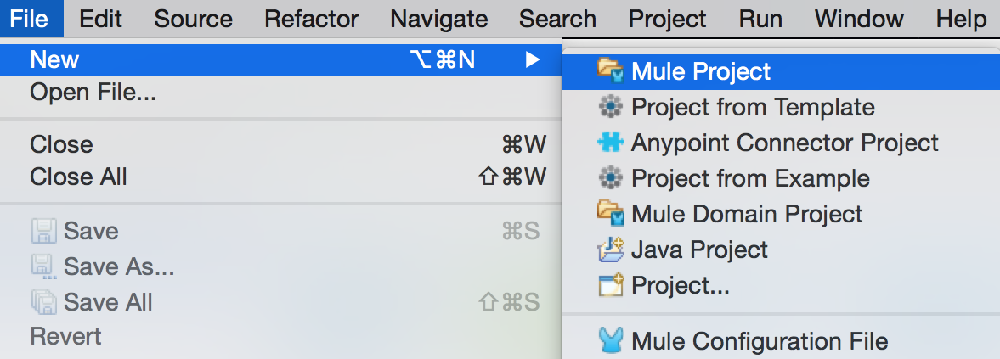
-
Enter a name for your new project and leave the remaining options with their default values. 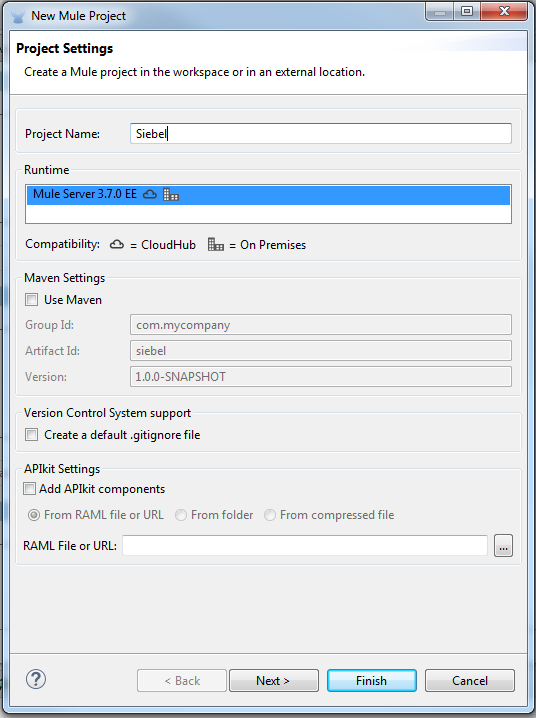
-
If you plan to use Git, check the Create a .gitignore file checkbox for the project to create a default
gitignorefile for Studio Projects (for more info see Preparing a gitignore File), and then click Next. -
Click Finish to create the project.
Configuring the Siebel Global Element
To use the Siebel connector v3.0.0 in your Mule application, you must configure a global element for the Siebel connector you wish to use:
-
Business Objects
-
Business Services
-
Integration Objects
To configure the Siebel connector global elements in your Mule application:
-
Click the Global Elements tab at the base of the canvas.
-
On the Global Mule Configuration Elements screen, click Create.
-
In the Choose Global Type wizard, expand Connector Configuration, and then select the connector you want to configure: Oracle Siebel Business Objects, Oracle Siebel Business Services, or Oracle Siebel Integration Objects.
-
Click OK
-
Enter the global element properties:
-
For the Oracle Siebel Business Objects connector:
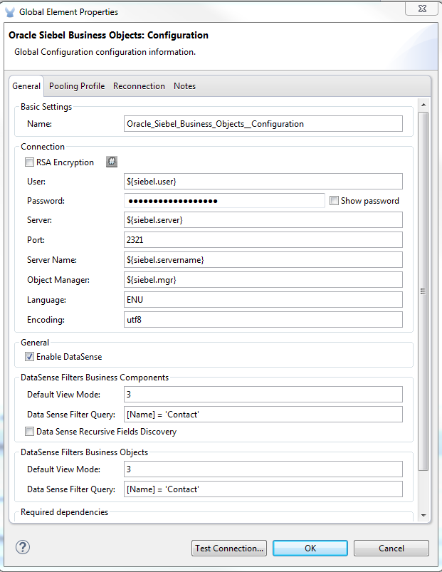
Field Description RSA Encryption
Choose if you want to use RSA encryption.
Name
Enter a name for this connector to reference it later.
User
Enter the Siebel username to be used.
Password
Enter the corresponding Siebel password.
Server
Enter the server IP address of your Siebel instance.
Port
Enter the port number.
Server Name
Enter the Siebel Enterprise server name.
Object Manager
Enter the value of the Object Manager of your Siebel instance. The default value is
EAIObjMgr_enu.Language
Enter the language corresponding to the locale of the Siebel instance.
Encoding
Enter an encoding type supported by the Siebel server.
Enable DataSense
This option is selected by default. If you want to disable the option, click the checkbox to clear it.
DataSense Filters Business Components:
(Composed of the two fields below, Default View Mode and DataSense Filter Query)
Default View Mode
Enter the default view for DataSense. The default value for this field is 3.
Supported values:
-
0 (SalesRepView):
-
Applies access control according to a single position or a sales team.
-
Displays records according to one of the following items: The user position or the sales team that includes a users position. The Visibility field or Visibility MVField of the business component determines the visibility.
-
-
1 (ManagerView):
Displays records that a user and others who report to the user can access. For example, it includes the records that Siebel CRM displays in the My Teams Accounts visibility filter. -
2 (PersonalView):
Displays records that a user can access, as determined by the *Visibility Field property of the BusComp view mode object. For example, it includes the records that Siebel CRM displays in the My Accounts visibility filter. -
3 (AllView):
Displays all records that includes a valid owner. For example, it includes the records that Siebel CRM displays in the All Accounts Across Organizations visibility filter.
DataSense Filter Query
Use this field to write a query to filter the Business Components metadata being downloaded into the application.
Limit the number of objects to retrieve through DataSense to a few objects using search specifications, otherwise retrieving metadata slows down Studio. DataSense Filters Business Objects:
(Composed of the two fields below, Default View Mode and DataSense Filter Query)
Default View Mode
Use to set the visibility type for a business component. The supported values are:
-
0 (SalesRepView):
-
Applies access control according to a single position or a sales team.
-
Displays records according to one of the following items: The user position or the sales team that includes the user position. The Visibility field or Visibility MVField of the business component determines the visibility.
-
-
1 (ManagerView):
Displays records that the user and the others who report to the user can access. For example, it includes the records that Siebel CRM displays in the My Teams Accounts visibility filter. -
2 (PersonalView):
Displays records that the user can access, as determined by the Visibility Field property of the BusComp view mode object. For example, it includes the records that Siebel CRM displays in the My Accounts visibility filter. -
3 (AllView):
Displays all records that includes valid owner. For example, it includes the records that Siebel CRM displays in the All Accounts Across Organizations visibility filter.
Data Sense Filter Query
Use this field to write a query to filter the Business Objects metadata being downloaded into the application.
Limit the number of objects to retrieve through DataSense to a few objects using search specifications; otherwise retrieving metadata slows down Studio. Required Dependencies
Click Add File to browse to and attach the required JAR files to your projects Build path.
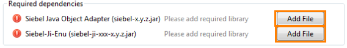
After the JAR files are attached, they appear in the
lib\siebeldirectory of your projects root folder.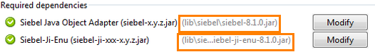
If you provide the wrong files (either invalid .jar or a completely different library), Studio displays the following error message:

-
-
For the Siebel Business Services connector:
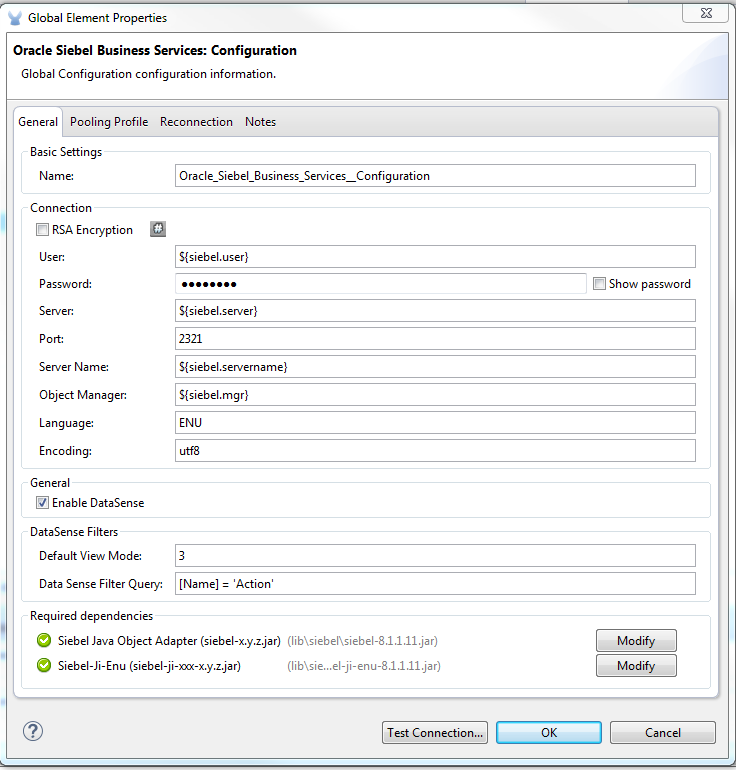
Field Description RSA Encryption
Choose if you want to use RSA encryption.
Name
Enter a name for this connector to reference it later.
User
Enter the Siebel username you want to use for this configuration.
Password
Enter the corresponding Siebel password.
Server
Enter the server IP address of your Siebel instance.
Port
Enter the port number.
Server Name
Enter the Siebel Enterprise server name.
Object Manager
Enter the value of the Object Manager of your Siebel instance. This defaults to
EAIObjMgr_enu.Language
Enter the language corresponding to the locale of the Siebel instance.
Encoding
Enter an encoding type supported by the Siebel server.
Enable DataSense
This option is selected by default. If you want to disable the option, click the box to clear it.
Default View Mode
Default View Mode is 3. It is used to set the visibility type for a business service.
Supported values:
-
0 (SalesRepView):
-
Applies access control according to a single position or a sales team.
-
Displays records according to one of the following items: The user position or the sales team that includes the user position. The Visibility field or Visibility MVField of the business component determines the visibility.
-
-
1 (ManagerView):
Displays records that the user and the others who report to the user can access. For example, it includes the records that Siebel CRM displays in the My Teams Accounts visibility filter. -
2 (PersonalView):
Displays records that the user can access, as determined by the Visibility Field property of the BusComp view mode object. For example, it includes the records that Siebel CRM displays in the My Accounts visibility filter. -
3 (AllView):
Displays all records that includes valid owner. For example, it includes the records that Siebel CRM displays in the All Accounts Across Organizations visibility filter.
Data Sense Filter Query
Use this field to write a query to filter the Business Services metadata being downloaded into the application.
Limit the number of objects to retrieve through DataSense to a few objects using search specifications, otherwise retrieving metadata slows down Studio. The Siebel Vanilla installation comes with 8000 predefined objects versus 350 in SFDC. Required Dependencies
Click Add File to attach required JAR files to your projects Build path.
After the JAR files are attached, they appear in the
lib/siebeldirectory of your projects root folder.If you provide the wrong files (either invalid JAR files or a completely different library), Studio displays the following error message:
-
-
For the Siebel Integration Objects connector:
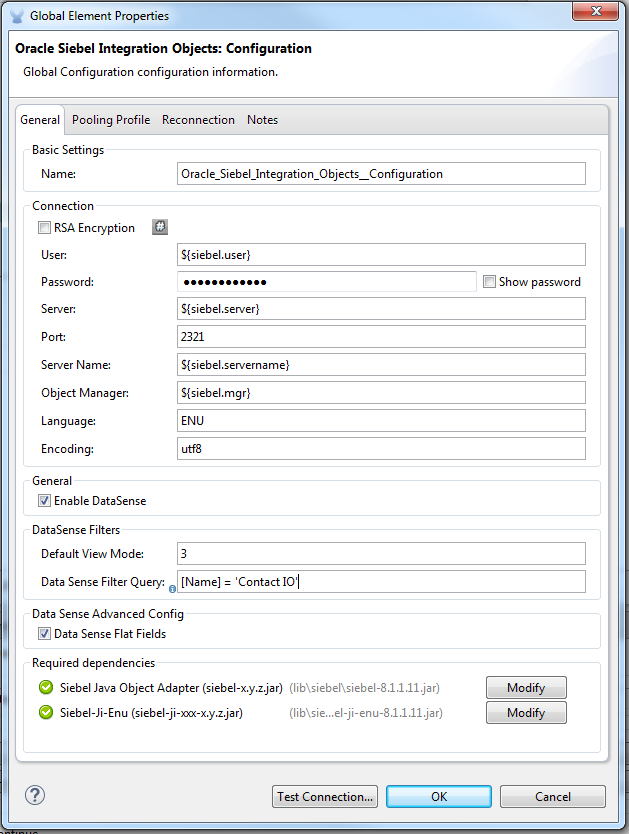
Field Description RSA Encryption
Choose if you want to use RSA encryption.
Name
Enter a name for this connector to reference it later.
User
Enter the Siebel username you want to use for this configuration.
Password
Enter the corresponding Siebel password.
Server
Enter the server IP address of your Siebel instance.
Port
Enter the port number.
Server Name
Enter the Siebel Enterprise server name.
Object Manager
Enter the value of the Object Manager of your Siebel instance. This defaults to
EAIObjMgr_enu.Language
Enter the language corresponding to the locale of the Siebel instance.
Encoding
Enter an encoding type supported by the Siebel server.
Enable DataSense
This option is selected by default. If you want to disable the option, click the box to clear it.
Default View Mode
The default value for this field is 3. It is used to set the visibility type for a integration object.
Supported values:
-
0 (SalesRepView):
-
Applies access control according to a single position or a sales team.
-
Displays records according to one of the following items: The user position or the sales team that includes the user position. The Visibility field or Visibility MVField of the business component determines the visibility.
-
-
1 (ManagerView):
Displays records that the user and the others who report to the user can access. For example, it includes the records that Siebel CRM displays in the My Teams Accounts visibility filter. -
2 (PersonalView):
Displays records that the user can access, as determined by the Visibility Field property of the BusComp view mode object. For example, it includes the records that Siebel CRM displays in the My Accounts visibility filter. -
3 (AllView):
Displays all records that includes valid owner. For example, it includes the records that Siebel CRM displays in the All Accounts Across Organizations visibility filter.
Data Sense Filter Query
Use this field to write a query to filter the Integration Objects metadata being downloaded into the application.
Limit the number of objects to retrieve through DataSense to a few objects using search specifications; otherwise retrieving metadata slows down Studio. The Siebel Vanilla installation comes with 8000 predefined objects versus 350 in SFDC. Data Sense Flat Fields
Select this box to allow Studio to flatten the object for DataSense purposes.
Anypoint Studio doesnt support hierarchical objects. Required Dependencies
Click Add File to attach required JAR files to your projects Build path.
-
-
-
Keep the Pooling Profile and the Reconnection tabs with their default entries.
-
Click Test Connection to confirm that the parameters of your global Siebel connector are accurate, and that Mule is able to successfully connect to your instance of Siebel. Read more about Testing Connections.
-
Click OK to save the global connector configurations.
Using the Connector
The Siebel Connector v3.0.0 is an operation-based connector, which means that when you add the connector to your flow you must specify an operation to perform.
Use Cases
The following are common use cases for the Siebel v3.0.0 connector:
-
Poll a Siebel connector at a regular interval for new registries and send the output into Salesforce.
-
Poll a Salesforce connector at a regular interval for new registries and send the output into Siebel.
Adding the Siebel Connector Business Object Connector 3.0.0 to a Flow
-
Create a new Mule project in Anypoint Studio.
-
Add a suitable Mule Inbound endpoint, such as the HTTP listener or File endpoint, to begin the flow.
-
Drag the Siebel Business Objects connector onto the canvas, then select it to open the properties editor.
-
Drag the business objects connector onto the canvas, then select it to open the properties editor.
-
Configure the connectors parameters:
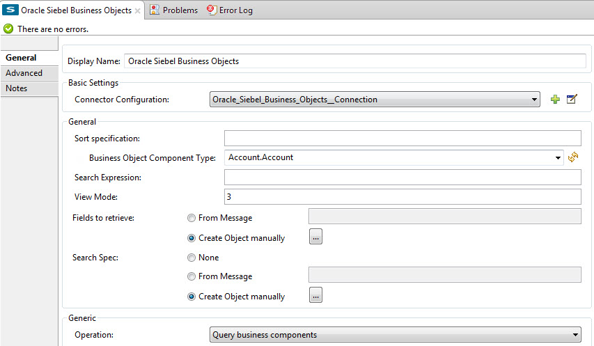
Field Description Display Name
Enter a unique label for the connector
Connector Configuration
Select a global Siebel connector element from the drop-drown.
General
The values in the General section vary depending on the operation you choose. The fields below are specific to Query Business Component operation. For a detailed explanation of all the available Sort Specification
Specify sorting criteria for the list of business components returned by the query.
Business Object Component Type
Define the Siebel business object type to act upon. The Siebel Jdb connector can access any one of the many business objects available in the Siebel CRM.
Search Expression
Use Mule Expression Language (MEL) to define a search expression that would return a list of business components.
View Mode
Define the Siebel view mode for the results the connector returns.
FieldstoRetrieve
Use this section to specify the list of fields to retrieve in the query:
From Message: Specify the Business Component fields to retrieve in the incoming payload.
Create Object manually: Specify the fields manually using the Object Builder editor.
Search Spec
Specify the search values to use as filters in the search query:
From Message: Define which values to use as search filters in the incoming payload.
Create Object manually: Define which values to use as search filters manually using the Object Builder editor.
Generic
Operation
Define the action this component must perform: create, delete, update, insert, upsert, or query business components
Adding the Siebel Connector Business Service 3.0.0 to a Flow
-
Create a new Mule project in Anypoint Studio.
-
Add a suitable Mule Inbound endpoint, such as the HTTP listener or File endpoint, to begin the flow.
-
Drag the Siebel Business Service connector onto the canvas, then select it to open the properties editor.
-
Drag the business Service connector onto the canvas, then select it to open the properties editor.
-
Configure the connectors parameters:
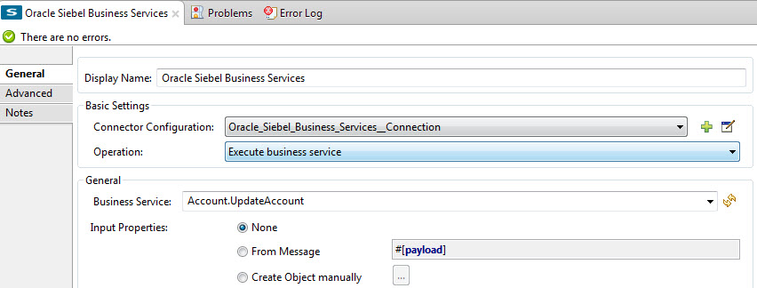Field Description Display Name
Enter a unique label for the connector
Connector Configuration
Select a global Siebel connector element from the drop-drown.
Operation
Define the action this component must perform: Define the action this component must perform:
Execute: Executes a Siebel Service using SiebelPropertySets.
Execute business service: Executes a Siebel Service using Maps instead of SiebelPropertySet.
General
If you select the Execute operation:
Integration Object
Define the Siebel integration object type to act upon.
Method Name
Enter the name of the method to be executed.
ServiceName
Enter the name of the Siebel service to be executed
Input Properties
From Message: Define the SiebelPropertySet in the incoming payload.
Create Object manually: Define the SiebelPropertySet manually
If you select the Execute business service operation:
Business Service
Define the Siebel integration object type to act upon.
Input
From Message: Specify which service to execute in the incoming payload.
Create Object manually: Specify which service to execute manually.
Adding the Siebel Integration Objects Connector 3.0.0 to a Flow
-
Create a new Mule project in Anypoint Studio.
-
Add a suitable Mule Inbound endpoint, such as the HTTP listener or File endpoint, to begin the flow.
-
Drag the Siebel Integration Objects connector onto the canvas, then select it to open the properties editor.
-
Configure the connectors parameters:

Field Description Display Name
Enter a unique label for the connector
Connector Configuration
Select a global Siebel connector element from the drop-drown.
Operation
Define the action this component must perform: Execute Siebel Adapter.
General
Integration Object
Define the Siebel integration object type to act upon.
Method
Define the EAI Siebel Adapter method.
Input Properties
Use this section to specify the list of fields to retrieve in the query:
From Message: Map the Integration Object fields from the incoming payload.
Create Object manually: Map the Integration Object field manually using the Object Builder editor.
-
Click the blank space on the canvas to save your connector configurations.
Example Use Case
Poll a Siebel connector at a regular interval, looking for new registries, and send the output into Salesforce.
Refer to documentation on the Poll Scope, DataWeave, and the Salesforce connector for in-depth information about these Mule elements.
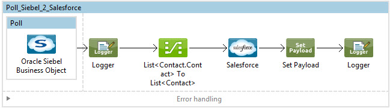
-
Create a Mule project in your Anypoint Studio.
-
Drag a Poll Scope into a new flow
-
Poll Reference executes any Mule element you place inside it at regular intervals. In this case, it is a Siebel endpoint.
-
Configure the Poll Scope as follows
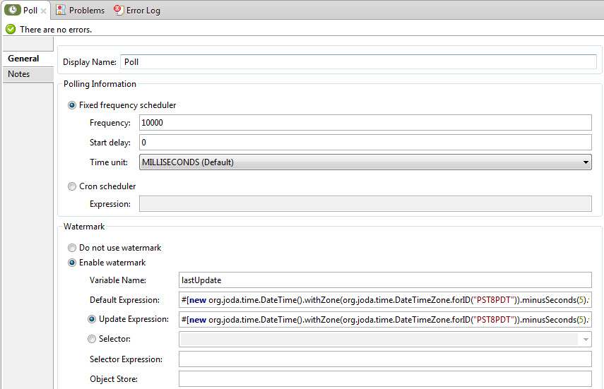
Attribute Value Frequency
60000
Start Delay
0
Time Unit
MILLISECONDS
Enable Watermark
check
Variable Name
lastUpdate
Default Expression
#[new org.joda.time.DateTime().withZone(org.joda.time.DateTimeZone.forID("PST8PDT")).minusSeconds(5).toString("MM/dd/yyyy HH:mm:ss")]Update Expression
#[new org.joda.time.DateTime().withZone(org.joda.time.DateTimeZone.forID("PST8PDT")).minusSeconds(5).toString("MM/dd/yyyy HH:mm:ss")]The poll scope triggers once a minute. The watermark ensures that registries in the Siebel DB arent processed more than once. It does this by keeping track of the last element processed in the last poll.
To learn how watermarks work and what each attribute is for, read about Poll Schedulers. -
Drag an Oracle Siebel Business Objects connector into the space provided by the Poll Scope.
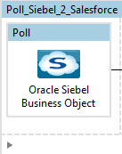The Siebel connector is now polled at the intervals you specified in the Poll Scope.
-
Open Siebel connectors properties editor, and next to the Config Reference field, click the + sign to add a new Global Element.
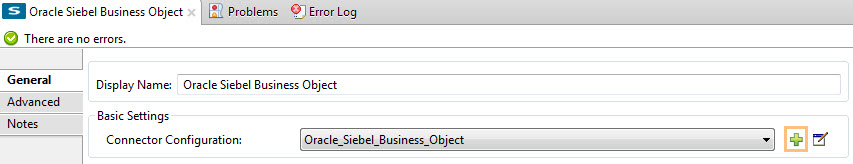
-
On the Global Element Properties window, configure the global element according to the settings below:
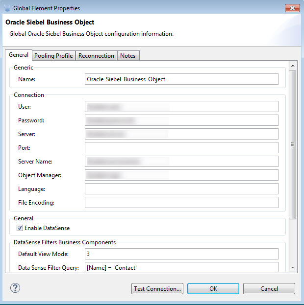
Attribute Value Name
Oracle_Siebel_Business_Object
User
<Your Siebel user name>
Password
<Your Siebel password>
Port
<Port youre using>
Server Name
<Server name on which the Siebel instance is hosted>
Object Manager
<Object manager you use>
Default View Mode
3
Data Sense Filter Query
[Name] = 'Action_IO' OR [Name] = 'Contact_IO'`Default View Mode
3
Data Sense Filter Query
[Name] = 'Action_IO' OR [Name] = 'Contact_IO'`DataSense is filtered via a query to extract data only from Contacts and Action. This allows for improved performance by avoiding unnecessary data extraction. -
Click Test Connection at the bottom of the window to ensure that everything is correctly configured.
-
Next, configure the Oracle Siebel Business Objects connector according to the settings below:
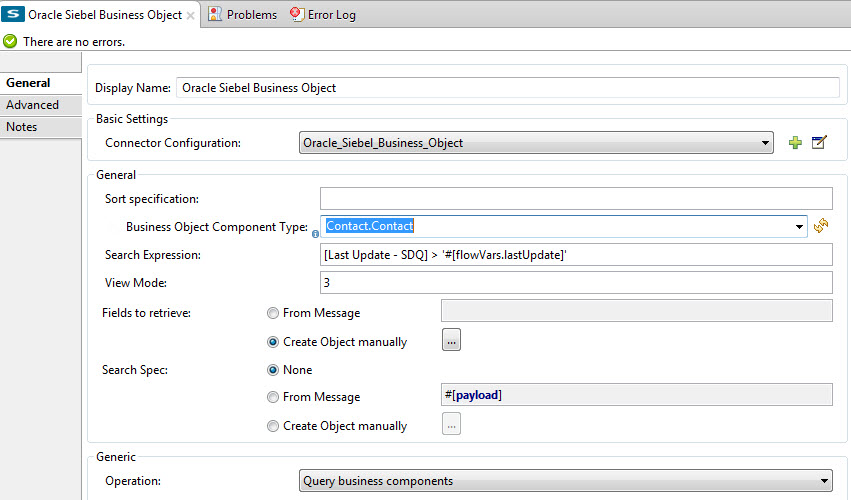
Attribute Value Display Name
Oracle Siebel business objects
Connector Configuration
Oracle_Siebel_Business_Object
Business Object Component Type
Contact.Contact
Search Expression
[Last Update - SDQ] > '#[flowVars.lastUpdate]'View Mode
3
fields-to-retrieve
Create Object Manually
search-spec
None
Operation
Query business components
Note: The search expression uses the same variable that is being updated by the Poll Scope. In this way, the Siebel connector returns only those DB records that Mule hasnt processed in the last poll.
Child Element Description siebel:fields-to-retrieve
Lists the output fields of the query
-
To set up the structure of the output message, switch views to the Studio XML Editor. Look for the Siebel connector in your XML code in a tag that looks like the tag below:
1 2
<siebel:query-business-components config-ref="Oracle_Siebel_Business_Object" businessObjectComponentType="Contact.Contact" searchExpression="[Last Update - SDQ] &gt; '#[flowVars.lastUpdate]'" doc:name="oracle siebel business objects"> </siebel:query-business-components>
In between the start and end tags of the
siebel:query-business-components, add the following child element structure:1 2 3 4 5 6 7 8 9
<siebel:fields-to-retrieve> <siebel:fields-to-retrieve>Last Name</siebel:fields-to-retrieve> <siebel:fields-to-retrieve>Email Address</siebel:fields-to-retrieve> <siebel:fields-to-retrieve>First Name</siebel:fields-to-retrieve> <siebel:fields-to-retrieve>Primary Organization</siebel:fields-to-retrieve> <siebel:fields-to-retrieve>Personal Contact</siebel:fields-to-retrieve> <siebel:fields-to-retrieve>Employee Number</siebel:fields-to-retrieve> <siebel:fields-to-retrieve>Account Integration Id</siebel:fields-to-retrieve> </siebel:fields-to-retrieve>
-
Drag a Logger after the Poll to register the Poll output.
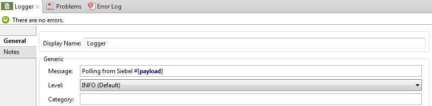
Attribute Value Message
Polling from Siebel #[payload]Level
Info
-
Drag a Salesforce Connector after the Logger. It uploads the output of the poll into your Salesforce account.
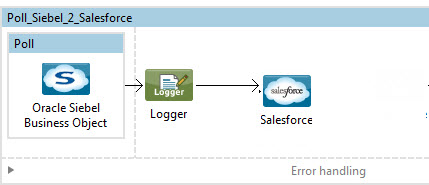 -
Open the Properties editor of the Salesforce connector, and click the + sign to add a new Salesforce global element.
-
On the Choose Global Type window, click Salesforce: Basic authentication, and then click Ok.
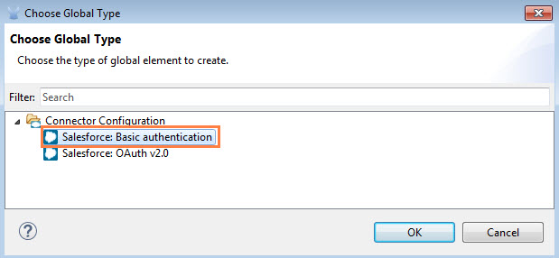
-
Configure the Salesforce global element properties:
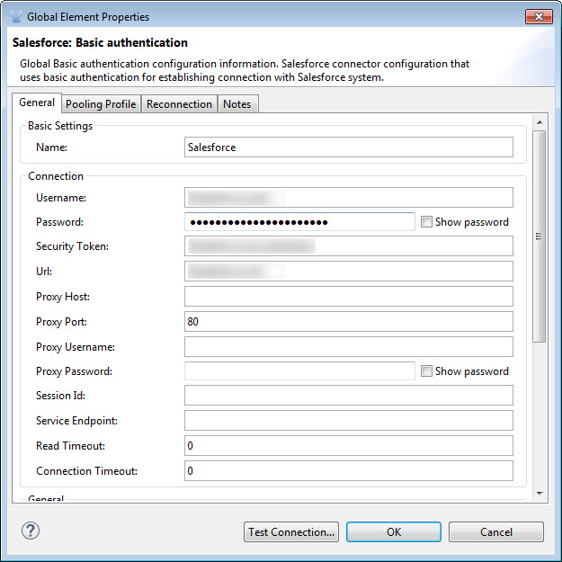
Attribute Value Name
Salesforce
Username
<Your user name>
Password
<Your password>
Security Token
<Your Token>
Url
<The URL on which your Salesforce account is hosted>
Proxy Port
80
Enable DataSense
check
-
Click Test Connection to ensure that everything is correctly configured.
-
Configure the Salesforce connector according to the settings below:
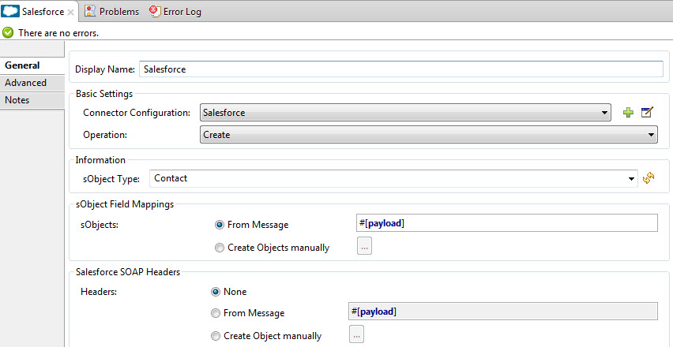
Attribute Value Display Name
Salesforce
Connector Configuration
Salesforce
Operation
Create
sObject Type
contact
sObjects
From Message:#[payload] -
Add a DataWeave element between the Logger and the Salesforce connector. It maps fields from the data structure returned by Siebel into the data structure required by Salesforce.
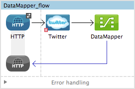 -
Configure the DataWeave element:
If you have already configured both connectors properly, DataWeave automatically shows what Siebel is giving as output and what Salesforce is getting as input Input:
Attribute Value Type
Connector
Connector
Oracle_Siebel_Business_ObjectOperation
query-business-componentsObject
List<Contact.Contact>
Output:
Attribute Value Type
Connector
Connector
Salesforce
Operation
create
Object
List<Contact>
-
Add a Logger at the end of the flow to register the outcome of the operation:
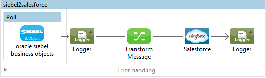
Attribute Value Message
#[payload.toString()]Level
Info
-
Save and run the project as a Mule Application.
-
At the start of your project, add a Salesforce Global Element to set up global configuration attributes for this connector:
1 2 3
<sfdc:config name="Salesforce" username="${salesforce.user}" password="${salesforce.password}" securityToken="${salesforce.securitytoken}" url="${salesforce.url}" doc:name="Salesforce"> <sfdc:connection-pooling-profile initialisationPolicy="INITIALISE_ONE" exhaustedAction="WHEN_EXHAUSTED_GROW"/> </sfdc:config>
Element Description sfdc:configConfigures connection settings for Salesforce
Attribute Value nameSalesforce
username<Your username>
password<Your password>
security token<Your security token>
url<The URL on which your Salesforce account is hosted>
doc:nameSalesforce
Child Element Description sfdc:connection-pooling-profileConfigures connection pooling settings for connecting to Salesforce
Attribute Value initialisationPolicyINITIALISE_ONE
exhaustedActionWHEN_EXHAUSTED_GROW
-
After the Salesforce Global Element, add a Siebel Global Element to set up global configuration attributes for this connector:
1 2 3
<siebel:config name="Oracle_Siebel_Business_Object" user="${siebel.user}" password="${siebel.password}" server="${siebel.server}" serverName="${siebel.servername}" objectManager="${siebel.mgr}" dataSenseFilterQueryBusComp="[Name] = 'Action_IO' OR [Name] = 'Contact_IO'" dataSenseFilterQueryBusObjects="[Name] = 'Action_IO' OR [Name] = 'Contact_IO'" doc:name="oracle siebel business objects"> <siebel:connection-pooling-profile initialisationPolicy="INITIALISE_ONE" exhaustedAction="WHEN_EXHAUSTED_GROW"/> </siebel:config>
Element Description siebel:configConfigures connection settings for Siebel
Attribute Value nameOracle_Siebel_Business_Objectuser<Your user name>
password<Your password>
server<The IP address of your Siebel server>
server<The Siebel Enterprise server name>
objectManager<The object manager you use>
dataSenseFilterQueryBusComp[Name] = 'Action_IO' OR [Name] = 'Contact_IO'dataSenseFilterQueryBusObjects[Name] = 'Action_IO' OR [Name] = 'Contact_IO'doc:nameoracle siebel business objectsChild Element Description siebel:connection-pooling-profileConfigures connection pooling settings for connecting to Siebel
Attribute Value initialisationPolicyINITIALISE_ONE
exhaustedActionWHEN_EXHAUSTED_GROW
-
Build a new Flow:
1 2
<flow name="Poll_Siebel_2_Salesforce" doc:name="Poll_Siebel_2_Salesforce" processingStrategy="synchronous"> </flow>
-
Add a Poll Scope inside your new Flow.
1 2 3 4
<poll doc:name="Poll"> <fixed-frequency-scheduler frequency="60000"/> <watermark variable="lastUpdate" default-expression="#[new org.joda.time.DateTime().withZone(org.joda.time.DateTimeZone.forID(&quot;PST8PDT&quot;)).minusSeconds(5).toString(&quot;MM/dd/yyyy HH:mm:ss&quot;)]" update-expression="#[new org.joda.time.DateTime().withZone(org.joda.time.DateTimeZone.forID(&quot;PST8PDT&quot;)).minusSeconds(5).toString(&quot;MM/dd/yyyy HH:mm:ss&quot;)]"/> </poll>
Element Description pollA Poll Scope executes the Mule element you place inside it at regular intervals. In this case, it will be a Siebel endpoint.
Child Element Description fixed-frequency-schedulerSets the interval for polling
Attribute Value frequency
6000
The poll scope triggers once a minute. The watermark ensures that registries in the Siebel DB arent processed more than once. It does so by keeping track of the last element processed in the last poll.
Child Element Description watermarkThe watermark ensures that registries in the Siebel DB arent processed more than once by keeping track of what was the last element that was processed in the last poll.
To learn how watermarks work and what each attribute is for, read about Poll Schedulers. Attribute Value variablelastUpdate
default-expression#[new org.joda.time.DateTime().withZone(org.joda.time.DateTimeZone.forID("PST8PDT")).minusSeconds(5).toString("MM/dd/yyyy HH: mm:ss" ;)]update-expression#[new org.joda.time.DateTime().withZone(org.joda.time.DateTimeZone.forID("PST8PDT")).minusSeconds(5).toString("MM/dd/yyyy HH:mm:ss")] -
Inside this Poll Scope, add a Siebel:query-business-components element
1 2 3 4 5 6 7 8 9 10 11
<siebel:query-business-components config-ref="Oracle_Siebel_Business_Object" businessObjectComponentType="Contact.Contact" searchExpression="[Last Update - SDQ] &gt; '#[flowVars.lastUpdate]'" doc:name="oracle siebel business objects"> <siebel:fields-to-retrieve> <siebel:fields-to-retrieve>Last Name</siebel:fields-to-retrieve> <siebel:fields-to-retrieve>Email Address</siebel:fields-to-retrieve> <siebel:fields-to-retrieve>First Name</siebel:fields-to-retrieve> <siebel:fields-to-retrieve>Primary Organization</siebel:fields-to-retrieve> <siebel:fields-to-retrieve>Personal Contact</siebel:fields-to-retrieve> <siebel:fields-to-retrieve>Employee Number</siebel:fields-to-retrieve> <siebel:fields-to-retrieve>Account Integration Id</siebel:fields-to-retrieve> </siebel:fields-to-retrieve> </siebel:query-business-components>
The Siebel connector polls at the intervals you specified in the Poll Scope:
Element Description siebel:query-business-componentsConnects to Siebel Business Components
Attribute Value config-refOracle_Siebel_Business_ObjectbusinessObjectComponentTypeContact.ContactsearchExpression[Last Update - SDQ] > '#[flowVars.lastUpdate]doc:nameoracle siebel business objectsChild Element Description siebel:fields-to-retrieveLists the output fields of the query
-
After the Poll Scope, add a Logger to verify the output of this poll:
1
<logger message="Polling from Siebel #[payload]" level="INFO" doc:name="Logger"/>
Element Description loggerLogs messages to the Mule console
Attribute Value messagePolling from Siebel #[payload]levelInfo
-
Add a Salesforce connector after this logger. It uploads the output of the poll into your Salesforce account.
<sfdc:create config-ref="Salesforce" type="Contact" doc:name="Salesforce"> <sfdc:objects ref="#[payload]"/> </sfdc:create>Element Description sfdc:createCreates a contact entry on the specified Salesforce account
Attribute Values config-refSalesforce
typeContact
doc:nameSalesforce
Child Element Description sfdc:objectsDefines what structure the created object will have
Attribute Values ref#[payload] -
Add another logger after the Salesforce connector to verify the success of the operation.
1
<logger message="#[payload.toString()]" level="INFO" doc:name="Logger"/>
Element Description loggerLogs messages to the Mule console
Attribute Value message#[payload.toString()]levelInfo
-
Add a DataWeave component between the first logger and the Salesforce connector. It maps fields from the data structure returned by Siebel into the data structure required by Salesforce
<data-mapper:transform doc:name="DataWeave"/> -
Switch to Studio Visual editor to configure DataWeave correctly. Click on the DataWeave icon to edit its fields:
If you have already configured both connectors properly, DataWeave should be able to automatically suggest the mapping you need to make. Input:
Attribute Value Type
Connector
Connector
Oracle_Siebel_Business_Object
Operation
query-business-componentsObject
List<Contact.Contact>Output:
Attribute Value Type
Connector
Connector
Salesforce
Operation
create
Object
List<Contact> -
Click Create mapping for DataWeave to build a mapping between both data structures.
-
A few fields dont have the same names in Salesforce as they do in Siebel. You must configure them manually.
Name in Siebel Name in Salesforce Email_Address
Email
First_Name
FirstName
Last_Name
LastName
There are two ways in which you can link these:
-
Look for the fields on both columns in DataLoaders graphical view, then simply drag and drop one onto the other.
This is usually the easiest way to go, but given the number of fields to navigate, it may be hard to find the fields you need. Use the search box above the field list to find these quickly.
-
Enter DataLoaders Script view and paste the following lines of code below what is already written:
output.Email = input.Email_Address; output.FirstName = input.First_Name; output.LastName = input.Last_Name;The full code should look like this:
//MEL //START -> DO NOT REMOVE output.__id = input.__id; //END -> DO NOT REMOVE output.Department = input.Department; output.Email = input.Email_Address; output.First_Name = input.First_Name; output.LastName = input.Last_Name;
-
-
Save and run the project as a Mule Application.
Example Code
| For the example use case code to work in Anypoint Studio, you must provide the credentials for both Siebel and Salesforce accounts. You can either replace the variables with their values in the code, or you can add a file named mule.properties in the src/main/properties folder to provide values for each variable. |
1
2
3
4
5
6
7
8
9
10
11
12
13
14
15
16
17
18
19
20
21
22
23
24
25
26
27
28
29
30
31
32
33
34
35
36
37
38
39
40
41
42
43
44
45
46
47
48
49
50
51
<?xml version="1.0" encoding="UTF-8"?>
<mule xmlns:context="http://www.springframework.org/schema/context"
xmlns:dw="http://www.mulesoft.org/schema/mule/ee/dw"
xmlns:siebel="http://www.mulesoft.org/schema/mule/siebel" xmlns:http="http://www.mulesoft.org/schema/mule/http" xmlns:data-mapper="http://www.mulesoft.org/schema/mule/ee/data-mapper" xmlns="http://www.mulesoft.org/schema/mule/core" xmlns:doc="http://www.mulesoft.org/schema/mule/documentation"
xmlns:spring="http://www.springframework.org/schema/beans" version="EE-3.7.0"
xmlns:xsi="http://www.w3.org/2001/XMLSchema-instance"
xsi:schemaLocation="
http://www.springframework.org/schema/context http://www.springframework.org/schema/context/spring-context-current.xsd http://www.mulesoft.org/schema/mule/ee/dw http://www.mulesoft.org/schema/mule/ee/dw/current/dw.xsd
http://www.springframework.org/schema/beans http://www.springframework.org/schema/beans/spring-beans-current.xsd
http://www.mulesoft.org/schema/mule/core http://www.mulesoft.org/schema/mule/core/current/mule.xsd
http://www.mulesoft.org/schema/mule/http http://www.mulesoft.org/schema/mule/http/current/mule-http.xsd
http://www.mulesoft.org/schema/mule/siebel http://www.mulesoft.org/schema/mule/siebel/current/mule-siebel.xsd
http://www.mulesoft.org/schema/mule/ee/data-mapper http://www.mulesoft.org/schema/mule/ee/data-mapper/current/mule-data-mapper.xsd">
<siebel:config name="Oracle_Siebel_Business_Object" user="${siebel.user}" password="${siebel.password}" server="${siebel.server}" serverName="${siebel.servername}" objectManager="${siebel.mgr}" dataSenseFilterQueryBusComp="[Name] = 'Action' OR [Name] = 'Contact'" dataSenseFilterQueryBusObjects="[Name] = 'Action' OR [Name] = 'Contact'" doc:name="oracle siebel business objects">
<siebel:connection-pooling-profile initialisationPolicy="INITIALISE_ONE" exhaustedAction="WHEN_EXHAUSTED_GROW"/>
</siebel:config>
<context:property-placeholder location="mule.properties"/>
<flow name="siebel2salesforce" >
<poll doc:name="Poll">
<fixed-frequency-scheduler frequency="60000"/>
<watermark variable="lastUpdate" default-expression="#[new org.joda.time.DateTime().withZone(org.joda.time.DateTimeZone.forID("PST8PDT")).minusSeconds(5).toString("MM/dd/yyyy HH:mm:ss")]" update-expression="#[new org.joda.time.DateTime().withZone(org.joda.time.DateTimeZone.forID("PST8PDT")).minusSeconds(5).toString("MM/dd/yyyy HH:mm:ss")]"/>
<siebel:query-business-components config-ref="Oracle_Siebel_Business_Object" businessObjectComponentType="Contact.Contact" searchExpression="[Last Update - SDQ] > '#[flowVars.lastUpdate]'" doc:name="oracle siebel business objects">
<siebel:fields-to-retrieve>
<siebel:fields-to-retrieve>Last Name</siebel:fields-to-retrieve>
<siebel:fields-to-retrieve>Email Address</siebel:fields-to-retrieve>
<siebel:fields-to-retrieve>First Name</siebel:fields-to-retrieve>
<siebel:fields-to-retrieve>Primary Organization</siebel:fields-to-retrieve>
<siebel:fields-to-retrieve>Personal Contact</siebel:fields-to-retrieve>
<siebel:fields-to-retrieve>Employee Number</siebel:fields-to-retrieve>
<siebel:fields-to-retrieve>Account Integration Id</siebel:fields-to-retrieve>
</siebel:fields-to-retrieve>
</siebel:query-business-components>
</poll>
<logger message="Polling from Siebel #[payload]" level="INFO" doc:name="Logger"/>
<dw:transform-message doc:name="Transform Message">
<dw:set-payload><![CDATA[%dw 1.0
%output application/java
---
{
"SiebelMessage":payload.SiebelMessage
}]]></dw:set-payload>
</dw:transform-message>
<sfdc:create config-ref="Salesforce" type="Contact" doc:name="Salesforce">
<sfdc:objects ref="#[payload]"/>
</sfdc:create>
<logger message="#[payload.toString()]" level="INFO" doc:name="Logger"/>
</flow>
</mule>
See Also
-
Learn more about working with Anypoint Connectors.
-
Learn how to use Mule Transformers.